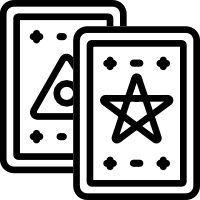

select divination engine:

tarot — sulphuric ignition
archetypal combustion. seven trumps drawn from the tarot de marseille. each card maps to one alchemical stage; reversals modulate intensity. the spread reads like a formula: discrete symbolic elements yielding a weighted vector.
operator heuristics:
- new sessions, decisive breaks, radical cuts
- when you need strong symbolic direction
- if you feel "i need to SEE what this is"
- major transitions, conceptual pivots
- sulfur: active, solar, outward, formal
☰
i ching - mercurial circulation
processual drift. six binary lines rolled to form a hexagram. each line (yin/yang, changing/stable) influences stage weights through layered correspondences. the reading feels like watching a system breathe: polarity, flux, modulation.
operator heuristics:
- Ongoing work, balancing acts, subtle course correction
- When working with existing material
- If you feel "I must feel how it's moving"
- Recursive processes, feedback loops
- Mercury: volatile, lunar, inward, fluid
orientation
the draw
transmutation mapping
choose yr cycle
reflection
what the reading evoked, what you plan to do, immediate reactions
what actually happened, unexpected outcomes, what persists